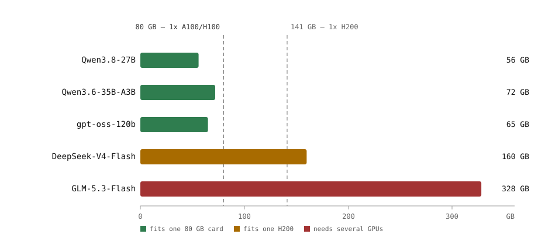

LLMs for On-Premises Deployment (upd. 2026)
Intro
The gap between open-weight and proprietary models closed a lot since this post was first written in early 2025. A 27B dense model today is close to what used to require 70B, and small MoE models push 100B+ quality onto a single 80 GB GPU. The other thing that changed: the Hugging Face Open LLM Leaderboard was archived in March 2025, so “the top of the leaderboard” now means something else. The open-weight lead also moved to Chinese labs — Qwen (Alibaba), GLM (Z.ai), DeepSeek — with gpt-oss as the main Western exception, and the shortlist below reflects that.
Here is a short practical guide: where to look, how dense and MoE differ when you size hardware, and which open models are worth a PoC for 1-2 GPU deployments as of late 2026.
Where to look
Two sources are enough to keep up:
- LMArena — crowdsourced pairwise comparisons, still the best proxy for “which model people actually prefer”. Covers both open and proprietary models.
- Artificial Analysis — independent benchmarks plus speed, latency and price; can be filtered to open weights only.
Model cards on Hugging Face fill in the rest: context length, license, quantization support. Don’t trust a single benchmark run — check at least two sources, and re-check after every release, because the top five changes every couple of months.
Dense vs MoE
A dense model runs every parameter for every token. VRAM is roughly params × bytes per weight, and compute scales with the same number. Simple to size, simple to quantize.
A Mixture-of-Experts model keeps all experts in memory but routes each token through only a few of them. So VRAM is still sized by the total parameter count, while compute and throughput behave closer to the active part. That’s the trade: you pay memory for quality, not compute.
For sizing that means two numbers matter, and they are easy to mix up. gpt-oss-120b has 117B total parameters but only ~5.1B active per token — it needs the VRAM of a 117B model and generates at roughly the speed of a small one.
Smaller models are mostly dense — below ~30B nearly everything is, and that’s still where most single-GPU deployments land. MoE becomes common when vendors want 70B+ quality with a small active budget, which is exactly the 30-120B range that fits on 1-2 GPUs.
Candidates
Same scope as before: official weights from the vendor (no community merges), a commercially usable license, and a node you can actually rent. The first three fit a single 80 GB GPU (quantize to 8-bit if you need a long context), the last two want a 3-5 card node; all five are supported by vLLM.
| Model | Params (active) | Context | License | Weights* |
|---|---|---|---|---|
| Qwen/Qwen3.8-27B | 27.8B (dense) | 256k | Apache 2.0 | ~56 GB |
| Qwen/Qwen3.6-35B-A3B | 36B (3B) | 256k | Apache 2.0 | ~72 GB |
| openai/gpt-oss-120b | 117B (5.1B) | 128k | Apache 2.0 | ~65 GB (MXFP4) |
| deepseek-ai/DeepSeek-V4-Flash | 284B (13B) | 1M | MIT | ~160 GB |
| zai-org/GLM-5.3-Flash | 320B (18B) | 300k | MIT | ~328 GB |
*Official checkpoint size, no KV cache — the vendors ship Qwen in bf16 and the rest pre-quantized.

Checkpoint sizes against single-GPU memory — weights only, before the KV cache.
Qwen3.8-27B is the smallest one here and the easiest to fit — a good default for a single GPU. Qwen3.6-35B-A3B is the fast and cheap option for chat and RAG: 36B total, but only 3B active per token. gpt-oss-120b stays on the shortlist as the one non-Chinese model worth the effort: 117B total, native MXFP4 weights, one 80 GB card. GLM-5.3-Flash and DeepSeek-V4-Flash are the step up for a 3-5 card node — both MIT, both with official weights and vendor deployment notes, and DeepSeek also gives you a real 1M context. DeepSeek’s newer V4.1-Flash (763B total, ~510 GB of weights) is out as well, but at that size it wants a 4-8 GPU node — V4-Flash stays the practical pick.
All five are Apache 2.0 or MIT — commercial use, modification and redistribution without user-count limits. That’s not the norm: Qwen’s larger models, DeepSeek’s older releases and most Llama derivatives ship custom licenses with extra clauses, so check the model card before the PoC, not after.
Serving
Two engines cover most on-prem deployments now:
- vLLM — still the default. Broadest model support, PagedAttention, continuous batching, OpenAI-compatible API. All the models above are in the supported list.
- SGLang — the better pick for MoE and long context: RadixAttention for prefix sharing, expert parallelism across GPUs, OpenAI-compatible API too. On a 3-5 card node with GLM-5.3-Flash or DeepSeek-V4-Flash this is the one to benchmark first.
TensorRT-LLM still pulls the most raw throughput out of NVIDIA hardware, but you pay with engine compilation, version pinning and much slower support for new architectures. Triton Inference Server remains useful as an orchestration layer around vLLM or TensorRT-LLM backends — it doesn’t replace the engine.
There is no separate model-specific runtime to install: DeepSeek, Qwen and Z.ai all ship official vLLM/SGLang recipes with the weights, and DeepSeek keeps a reference inference implementation in the repo. Check the model card for the recommended engine version — DeepSeek V4, for example, wants Hopper-class GPUs for the stock kernels.
For multi-node serving, Ray Serve + vLLM/SGLang or NVIDIA Dynamo on top is the usual path — at the cost of running a cluster on Kubernetes.
Sizing the KV cache
Weights are only half of the story. KV cache grows linearly with context and concurrency:
kv_bytes = 2 × layers × kv_heads × head_dim × tokens × batch × bytes_per_element
Qwen3.8-27B has 64 layers, 4 KV heads and 256-dim heads: ~128 KB per token at FP8 KV, so one 128k request needs ~16 GB and a 256k request ~32 GB — on top of the ~56 GB of weights. Batch a few long requests and an 80 GB card is full.
Two cheap wins: set max_model_len to what you actually serve, and read the model card — newer architectures compress KV hard. DeepSeek V4 keeps ~10% of V3.2’s KV at 1M context, at the price of a much more complex attention stack.
Conclusion
- Single 80 GB GPU: Qwen3.8-27B if you want a plain dense model; Qwen3.6-35B-A3B or gpt-oss-120b if you want MoE throughput on the same card.
- 3-5 GPU node: DeepSeek-V4-Flash (284B, 13B active, MIT, 1M context) or GLM-5.3-Flash (320B, 18B active, MIT) — the two strongest open options in that size class.
- Whichever engine you pick, the real footprint is weights plus KV cache at your actual context and concurrency.